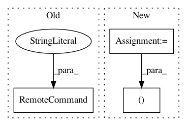

af9eb080f453481a769b9472f83371129e90c031,perfkitbenchmarker/packages/sysbench05plus.py,,YumInstall,#Any#,25
Before Change
vm.InstallPackages("bzr")
vm.InstallPackages("mysql mysql-server mysql-devel")
vm.RemoteCommand("cd ~ && bzr branch lp:sysbench")
vm.RemoteCommand("cd ~/sysbench && ./autogen.sh &&"
" ./configure --prefix=/usr --mandir=/usr/share/man &&"
" make")
vm.RemoteCommand("cd ~/sysbench && sudo make install")
vm.RemoteCommand("sudo mkdir /usr/share/doc/sysbench/tests/db -p")
vm.RemoteCommand("sudo cp ~/sysbench/sysbench/tests/db/*"
" /usr/share/doc/sysbench/tests/db/")
After Change
vm.RemoteCommand("cd ~ && bzr branch lp:sysbench")
vm.RemoteCommand(("cd ~/sysbench && ./autogen.sh &&"
" ./configure --prefix=%s --mandir=%s/share/man &&"
" make") % (vm_util.VM_TMP_DIR, vm_util.VM_TMP_DIR))
vm.RemoteCommand("cd ~/sysbench && sudo make install")
vm.RemoteCommand("sudo mkdir %s/share/doc/sysbench/tests/db -p" %
vm_util.VM_TMP_DIR)
In pattern: SUPERPATTERN
Frequency: 3
Non-data size: 3
Instances
Project Name: GoogleCloudPlatform/PerfKitBenchmarker
Commit Name: af9eb080f453481a769b9472f83371129e90c031
Time: 2015-07-26
Author: stfeng@google.com
File Name: perfkitbenchmarker/packages/sysbench05plus.py
Class Name:
Method Name: YumInstall
Project Name: GoogleCloudPlatform/PerfKitBenchmarker
Commit Name: e2762e5ea3768cbc2cb01de196537c6ffb1cbd5e
Time: 2021-01-25
Author: chriswilkes@google.com
File Name: perfkitbenchmarker/linux_packages/intelmpi.py
Class Name:
Method Name: FixEnvironment
Project Name: GoogleCloudPlatform/PerfKitBenchmarker
Commit Name: 9d35976700b9db72995fabdbf59a0719e53bc4bd
Time: 2019-11-06
Author: pclay@google.com
File Name: perfkitbenchmarker/windows_virtual_machine.py
Class Name: WindowsMixin
Method Name: WaitForBootCompletion